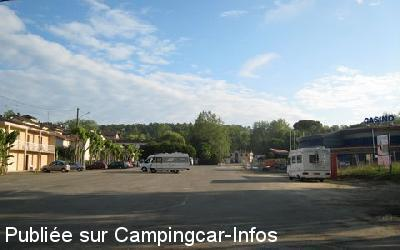

APN = Parking toléré jour/nuit de :
BARBOTAN
(N° 148)
Accès/adresse :
Avenue des Thermes
32150 BARBOTAN
32150 BARBOTAN
Latitude : (Nord) 43.94944° Décimaux ou 43° 56′ 57′′
Longitude : (Ouest) -0.04389° Décimaux ou 0° 2′ 38′′
Tarif : 2015
Stationnement, nuitée 22 h à 6 h : 4.50 €
Services :

Tous commerces
Autres informations :

Le 24/05/2009 par lukyluke
de
brebioux85
le 08/09/2012 :
Nous y avons passé une semaine en aout 2012.
Stationnement payant de 22h a 6h, mais aucun camping-car présent ne payait et RAS!
Idéal pour aller aux thermes a pieds tôt le matin.
WC public a 150m.
Nous y avons passé une semaine en aout 2012.
Stationnement payant de 22h a 6h, mais aucun camping-car présent ne payait et RAS!
Idéal pour aller aux thermes a pieds tôt le matin.
WC public a 150m.